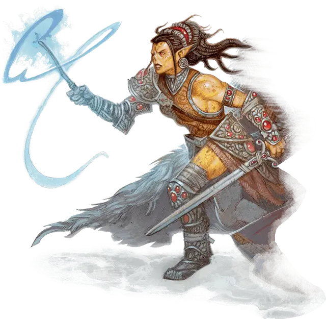

Гитъянки Гиш
Githyanki Gish
Средний Гуманоид (Гит), законно-злой

Класс Доспеха 17 (полулаты)
Хиты 123 (19к8 + 38)
Скорость 30 футов
| мод | спас | ||
|---|---|---|---|
| СИЛ | 17 | +3 | +3 |
| ЛОВ | 15 | +2 | +2 |
| ТЕЛ | 14 | +2 | +6 |
| мод | спас | ||
|---|---|---|---|
| ИНТ | 16 | +3 | +7 |
| МДР | 15 | +2 | +6 |
| ХАР | 16 | +3 | +3 |
Навыки Восприятие +6, Проницательность +6, Скрытность +6
Чувства пассивное Восприятие 16
Языки Гитский
Опасность 10 (5900 опыта)
Бонус мастерства +4
Среда обитания Город, Горы, Пустыня
Особенности
Врождённое колдовство (псионика). Базовой характеристикой гитъянки является Интеллект (Сл спасброска от заклинания 15, +7 к попаданию атаками заклинаниями). Он может накладывать следующие заклинания, не нуждаясь ни в каких компонентах:
• Неограниченно: волшебная рука (рука невидима) [mage hand]
• 3/день каждое: прыжок [jump], туманный шаг [misty step], необнаружимость (только на себя) [nondetection]
• 1/день каждое: уход в иной мир [plane shift], телекинез [telekinesis]
Использование заклинаний. Гитъянки является заклинателем 8-го уровня. Его базовой характеристикой является Интеллект (Сл спасброска от заклинаний 15, +7 к атакам заклинаниями). У него подготовлены следующие заклинания волшебника:
• Заговоры (неограниченно): защита от оружия [blade ward], свет [light], сообщение [message], меткий удар [true strike]
• 1 уровень (4 ячейки): поспешное отступление [expeditious retreat], волшебная стрела [magic missile], усыпление [sleep], волна грома [thunderwave]
• 2 уровень (3 ячейки): размытый образ [blur], невидимость [invisibility], левитация [levitate]
• 3 уровень (3 ячейки): контрзаклинание [counterspell], огненный шар [fireball], ускорение [haste]
• 4 уровень (2 ячейки): переносящая дверь [dimension door]
Боевая магия. Когда гитъянки совершает действие, чтобы наложить заклинание, он может бонусным действием совершить одну атаку оружием.
Действия
Мультиатака. Гитъянки совершает две атаки Длинным мечом.
Длинный меч. Рукопашная атака оружием: +7 к атаке, досягаемость 5 футов, одна цель. Попадание: 7 (1к8 + 3) рубящего урона, или 8 (1к10 + 3) рубящего урона, если атака наносится двумя руками, плюс 18 (4к8) урона психической энергией.
Описание
Острый ум и псионические дары позволяют гитъянкам осваивать магию. Гиши смешивают собственные магические способности с фехтованием, благодаря чему становятся особо опасными врагами в бою. Их специализированные возможности позволяют им подходить для убийств, налётов и шпионажа.
См. дополнительно статью: "Бестиарий: Гиты"